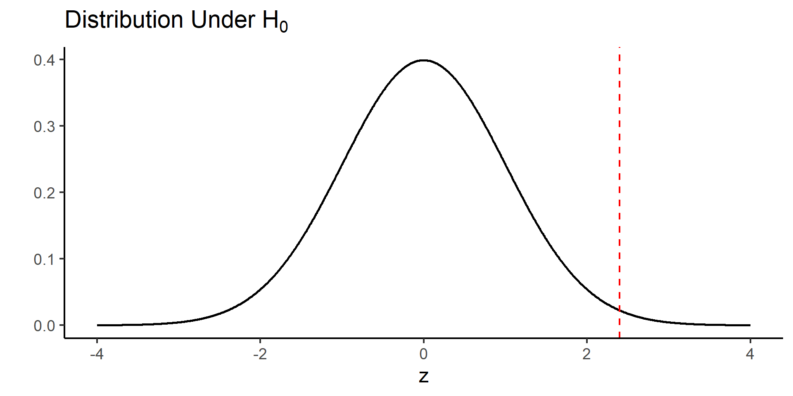
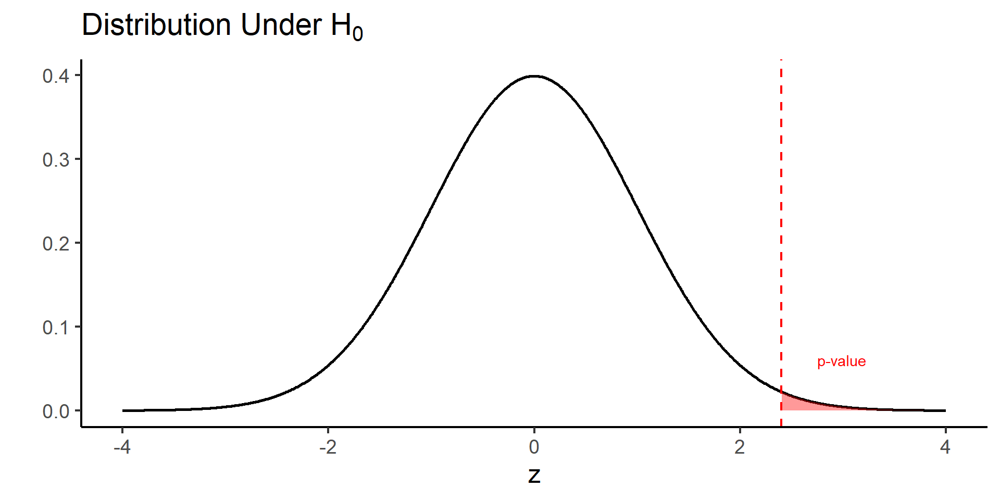
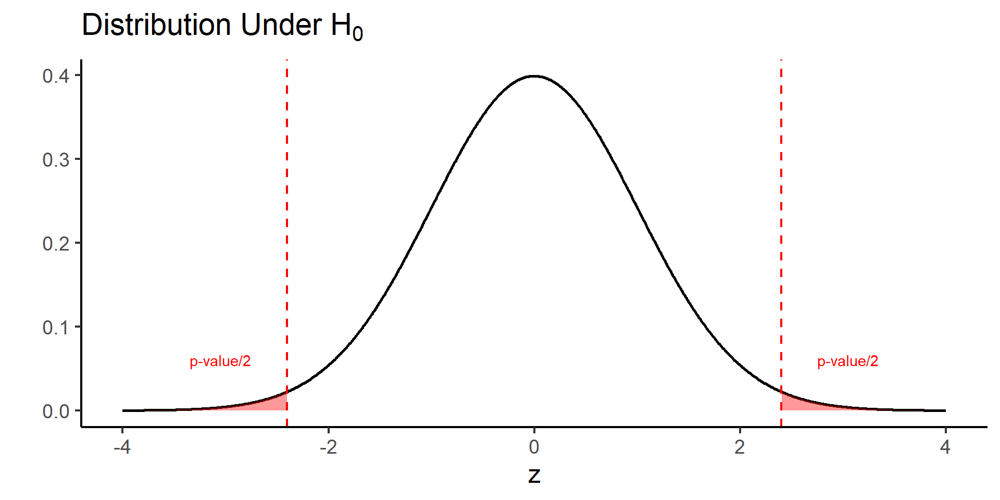
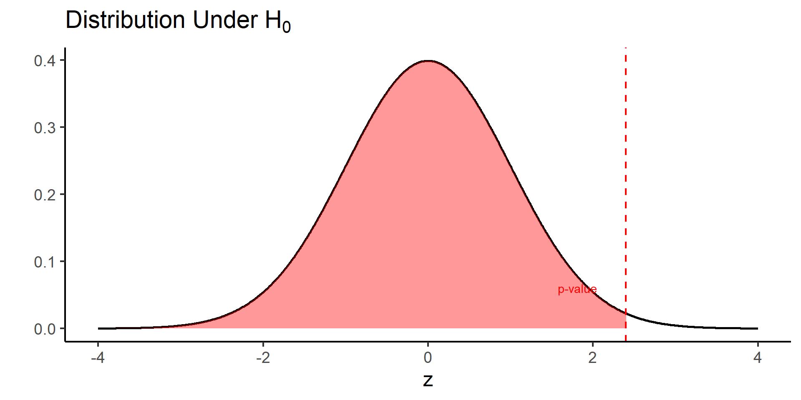
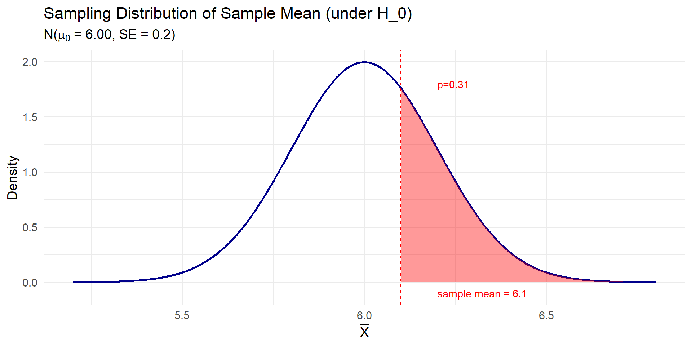
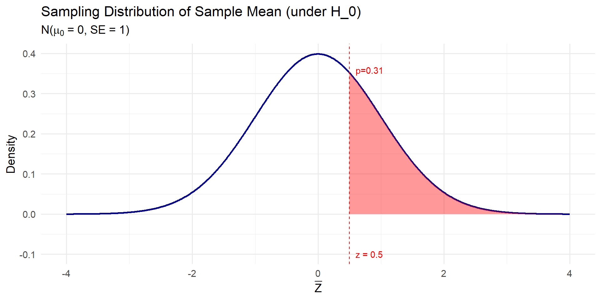
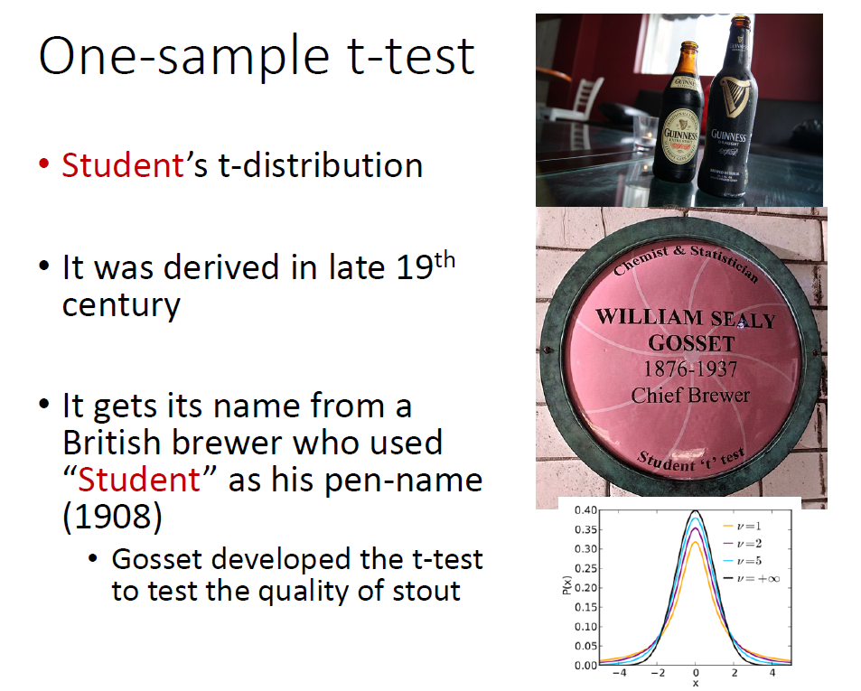

Hypothesis Testing I
Zhaoxia Yu
Load packages, read data
Outline
What does hypothesis testing do?
We will use testing a population proportion as a running example to introduce the key concepts of hypothesis testing.
Testing hypotheses about population mean.
The Role of Hypothesis Testing
After collecting data, we often want to answer questions about a population.
Statistical inference provides several tools:
- Estimate a population quantity.
- Quantify uncertainty.
- Test a scientific hypothesis.
Hypothesis testing helps determine whether the observed data provide sufficient evidence against a proposed explanation (the null hypothesis).
Scientific Questions and Hypotheses
- Scientific research often begins with a scientific question.
Examples:
Do more than half of people have a larger right hippocampus than their left hippocampus?
Does more than 20% of patients respond to a new treatment?
Is the average body temperature of healthy adults less than 98.6°F?
Expressing Hypotheses Statistically
Scientific questions are translated into statements about population parameters.
A hypothesis is a testable statement about a population that can be evaluated using data.
Do more than half of people have a larger right hippocampus than their left hippocampus? \(p>0.50\)
Does more than 20% of patients respond to a new treatment? \(p>0.20\)
Is the average body temperature of healthy adults less than 98.6°F? \(\mu<98.6\)
Formulating a Hypothesis Test
Every hypothesis test consists of two competing hypotheses.
Null Hypothesis (\(H_0\))
Definition: A statement is often about no effect or no difference, or nothing of interest.
Purpose: Serves as the default or starting assumption.
Alternative Hypothesis (\(H_a\) or \(H_1\))
Definition: A statement is often about an effect or a difference.
Purpose: Represents what we are trying to find evidence for.
Formulating a Hypothesis Test: Example
Scientific Question: Do more than half of people have a larger right hippocampus than their left hippocampus?
Parameter of Interest: \(p\): the proportion of people whose right hippocampus is larger than their left hippocampus.
Null Hypothesis: \(H_0: p = 0.5\)
- In testing a population proportion, the hypothetical value is often denoted as \(p_0\). In this case, \(p_0 = 0.5\).
Alternative Hypothesis: \(H_a: p > 0.5\)
- Because we are interested in whether the proportion is greater than 0.5, we use a one-sided alternative hypothesis.
Test Statistic
A test statistic is a number calculated from the sample data.
It summarizes the evidence against the null hypothesis.
We compare the observed test statistic to its null distribution, the distribution expected if the null hypothesis is true.
If the observed value is sufficiently unlikely under the null distribution, we reject \(H_0\).
Test Statistic: Example
Question: Do more than half of people have a larger right hippocampus than their left hippocampus?
Suppose we examine 100 people, and 62 have a larger right hippocampus.
A natural test statistic is the sample proportion
\[ \hat p=\frac{62}{100}=0.62. \]
Is 0.62 sufficiently larger than 0.50, or could this difference be due to random sampling?
To answer this question, we standardize the sample proportion.
For testing a proportion, it is common to use the standardized test statistic: the z-statistic.
Z-statistic
Let \(\hat p\) denote the sample proportion, \(p_0\) denote the hypothesized population proportion under \(H_0\), and \(n\) denote the sample size.
The z-statistic is defined as \[ z=\frac{\hat p-p_0} {\sqrt{p_0(1-p_0)/n}}, \]
If the null hypothesis is true, the z-statistic follows a standard normal distribution approximately when \(n\) is large enough.
Testing a Proportion: Example
Question: Do more than half of people have a larger right hippocampus than their left hippocampus?
Suppose we examine 100 people, and 62 have a larger right hippocampus.
Hypotheses: \(H_0: p = 0.50 \qquad\text{vs.}\qquad H_a: p > 0.50\)
Sample proportion: \(\hat{p}=\frac{62}{100}=0.62.\)
Test statistic: \[z=\frac{0.62-0.50}{\sqrt{0.5(1-0.5)/100}}=2.40.\]
The Null Distribution and Observed Z-statistic
- Is 2.40 extreme enough to reject the null hypothesis?
Code
library(ggplot2)
# Observed z-statistic
z <- 2.40
# Data for the standard normal curve
x <- seq(-4, 4, length.out = 1000)
df <- data.frame(
x = x,
y = dnorm(x)
)
# Right-tail region
tail_df <- subset(df, x >= z)
ggplot(df, aes(x, y)) +
geom_line(linewidth = 1) +
geom_vline(xintercept = z,
linetype = "dashed",
color = "red",
linewidth = 0.8) +
labs(
x = "z",
y = "",
title = expression("Distribution Under " * H[0])
) +
theme_classic(base_size = 18)
The Null Distribution and Observed Z-statistic
Code
pval <- pnorm(z, lower.tail = FALSE)
ggplot(df, aes(x, y)) +
geom_line(linewidth = 1) +
geom_area(
data = tail_df,
aes(x, y),
alpha = 0.4,
fill = "red"
) +
geom_vline(
xintercept = z,
linetype = "dashed",
color = "red",
linewidth = 0.8
) +
annotate(
"text",
x = z + 0.35,
y = 0.06,
label = "p-value",
color = "red",
hjust = 0
) +
# annotate(
# "text",
# x = z + 0.45,
# y = 0.03,
# label = paste0("= ", round(pval, 4)),
# color = "red",
# hjust = 0
# ) +
labs(
x = "z",
y = "",
title = expression("Distribution Under " * H[0])
) +
theme_classic(base_size = 18)
P-value
The p-value measures how surprising the observed data are if the null hypothesis is true.
Definition: The p-value is the probability, assuming the null hypothesis is true, of observing a test statistic at least as extreme as the one observed.
A small p-value indicates strong evidence against the null hypothesis.
Important: A p-value is not the probability that the null hypothesis is true.
- What does “extreme” mean?
- It means values that provide at least as much evidence against the null hypothesis as the observed test statistic.
- For a right-tailed test (\(H_a: p>p_0\)), “more extreme” means larger values.
- In our example, “as extreme as 2.40” means 2.40 or larger.
P-value: Example
Why are we interested in the area to the right of 2.40?
Recall that \(H_0: p = 0.50\) and \(H_a: p > 0.50\).
In this example, the p-value is
It tell us the probability of observing a z-statistic as extreme or more extreme than 2.40 under the null hypothesis.
At level \(\alpha=0.05\), we reject \(H_0\) because the p-value is less than 0.05.
Significance Level (\(\alpha\))
The significance level (\(\alpha\)) is the threshold for deciding whether to reject the null hypothesis.
It is chosen before analyzing the data.
A common choice is [ = 0.05. ]
Decision rule:
- If the p-value \(\le \alpha\), reject \(H_0\).
- If the p-value \(> \alpha\), fail to reject \(H_0\).
Choosing \(\alpha=0.05\) means we are willing to tolerate a 5% Type I error rate.
Two-Sided Test
What if \(H_0: p = 0.50\) and \(H_a: p \neq 0.50\)?
Code
left_df <- subset(df, x <= -abs(z))
right_df <- subset(df, x >= abs(z))
ggplot(df, aes(x, y)) +
geom_line(linewidth = 1) +
geom_area(
data = left_df,
aes(x, y),
fill = "red",
alpha = 0.4
) +
geom_area(
data = right_df,
aes(x, y),
fill = "red",
alpha = 0.4
) +
geom_vline(
xintercept = c(-abs(z), abs(z)),
linetype = "dashed",
color = "red",
linewidth = 0.8
) +
annotate(
"text",
x = -abs(z) - 0.35,
y = 0.06,
label = "p-value/2",
color = "red",
hjust = 1
) +
annotate(
"text",
x = abs(z) + 0.35,
y = 0.06,
label = "p-value/2",
color = "red",
hjust = 0
) +
labs(
x = "z",
y = "",
title = expression("Distribution Under " * H[0])
) +
theme_classic(base_size = 18)
Left-Sided Test
What if \(H_0: p = 0.50\) and \(H_a: p < 0.50\)?
Code
# Left-tail region
tail_df <- subset(df, x <= z)
ggplot(df, aes(x, y)) +
geom_line(linewidth = 1) +
geom_area(
data = tail_df,
aes(x, y),
alpha = 0.4,
fill = "red"
) +
geom_vline(
xintercept = z,
linetype = "dashed",
color = "red",
linewidth = 0.8
) +
annotate(
"text",
x = z - 0.35,
y = 0.06,
label = "p-value",
color = "red",
hjust = 1
) +
labs(
x = "z",
y = "",
title = expression("Distribution Under " * H[0])
) +
theme_classic(base_size = 18)
Test a Proprotion: Activities
Activities and Goals
n = 20.
We will test
\[ H_0: p=0.50 \qquad\text{vs.}\qquad H_a: p>0.50. \]
Activity 1: Simulate data when the null hypothesis is true. Conduct the hypothesis test and discuss the results.
Activity 2: Simulate data when the alternative hypothesis is true \(p=0.7\). Conduct the hypothesis test and discuss the results.
Activity 1: When \(H_0\) Is True
Change the random seed to any number.
Run the code and compute the p-value.
Based on the p-value, do you reject \(H_0\) at the 5% significance level?
Code
set.seed(2026)
p0 <- 0.50
p <- p0 # H0 is true
n <- 20
# Simulate data
x <- rbinom(1, n, p)
# Sample proportion
phat <- x / n
# z statistic
z <- (phat - p0) / sqrt(p0 * (1 - p0) / n)
# One-sided p-value: H1: p > p0
p.value <- pnorm(z, lower.tail = FALSE)
cat("Number of successes:", x, "\n")
cat("Sample proportion:", round(phat, 3), "\n")
cat("z statistic:", round(z, 3), "\n")
cat("p-value:", round(p.value, 4), "\n")Activity 1: Discussion
Since \(H_0\) is actually true,
If you fail to reject \(H_0\), the decision is correct.
If you reject \(H_0\), you have made a false positive (Type I error).
Will everyone obtain the same answer? Why or why not?
Activity 2: When \(H_a\) Is True
Now change \(p\) to 0.7 and repeat the activity.
- Do you reject \(H_0\) at the 5% significance level?
- If you reject \(H_0\), the decision is correct.
- Do you fail to reject \(H_0\) at the 5% significance level?
- If you fail to reject \(H_0\), you have made a false negative (Type II error).
Summary
- Suppose the null is true. What can happen?
- Fail to reject \(H_0\) - True Negative (TN)
- Reject \(H_0\): False Positive (FP): Type I error
- The rate of type I error is called type I error rate.
- Suppose the alternative is true
- Reject \(H_0\): True Positive (TP)
- Fail to reject \(H_0\): False Negative (FN): Type II error
- The rate of true positive is called the statistical power of a test.
Summary
| Truth | Fail to Reject \(H_0\) | Reject \(H_0\) |
|---|---|---|
| \(H_0\) is true | True Negative (TN) | False Positive (FP) (Type I error) |
| \(H_a\) is true | False Negative (FN) (Type II error) | True Positive (TP) |
- Type I error rate: Probability of a false positive.
- Power: Probability of a true positive (\(1-\) Type II error rate).
Mean
Hypothesis testing for the population mean
- Consider hippocampal volume in impaired males, where we want to examine the null hypothesis
\(H_{0}: \mu = 6\) against the alternative hypothesis \(H_A: \mu >6\).
- The alternative hypothesis \(H_{A}: \mu >6\) is a one-sided alternative.
- One-sided vs two-sided alternatives:
- One-sided: \(H_A: \mu > \mu_0\) or \(H_A: \mu < \mu_0\)
- Two-sided: \(H_A: \mu \neq \mu_0\)
Hypothesis testing for the population mean
- We learned the sample mean is a reasonable estimator of the population mean.
- The sample mean of hippocampal volume of impaired males is \(\bar x=6.1\).
- What does the sample mean tell you? Should you reject \(H_0\) based on the sample mean?
- Of course not, because a sample mean alone doesn’t tell us how unusual it is under \(H_0\).
Why Isn’t \(\bar{x} = 6.1\) Enough?
- Suppose we want to test: \(H_0: \mu = 6.00\) vs. \(H_1: \mu > 6.00\)
- The observed sample mean \(\bar{x} = 6.1\) is higher. But how much higher is “a lot”?
- A difference of 0.1 could be:
- A large difference if there’s little variation
- A small difference if there’s a lot of variation
- We need to quantify uncertainty around \(\bar{x}\) by considering how \(\bar{X}\) behaves under the null hypothesis \(H_0\).
p-value
We quantify “how extreme” using the probability of values as or more extreme than the observed value, based on the null distribution in the direction supporting the alternative hypothesis.
This probability is also called the p-value and denoted \(p\).
For the above example, \[\begin{equation*} p = P(\bar{X} \ge \bar{x} | H_{0}), \end{equation*}\]
where \(\bar{x}=6.1\) in this example.
The Null Distribution of \(\bar{X}\) (Known σ)
- Suppose \(\sigma = 1\) and sample size is \(n = 25\)
- Then, under the null hypothesis \(H_0: \mu = 6.00\):
\[ \bar{X} \sim N\left(\mu = 6.00,\ \frac{\sigma}{\sqrt{n}} = \frac{1}{5}=0.2 \right) \]
- \(P(\bar X \ge 6.1 | H_0)\) is the area under the curve to the right of \(\bar{x} = 6.1\) in the null distribution.
\(P(\bar X \ge 6.1 | H_0)\)
Code
library(ggplot2)
# Define parameters
mu0 <- 6.00
se <- 0.2
x_obs <- 6.10
# Create a sequence of x values centered around mu0
x_vals <- seq(mu0 - 4 * se, mu0 + 4 * se, length.out = 1000)
# Compute the density
density_vals <- dnorm(x_vals, mean = mu0, sd = se)
# Create a data frame
df <- data.frame(x = x_vals, y = density_vals)
# Define the tail area (right of observed x)
df$tail <- ifelse(df$x >= x_obs, "Right Tail", "Main")
# Plot
ggplot(df, aes(x, y)) +
geom_line(color = "darkblue", size = 1) +
geom_area(data = subset(df, tail == "Right Tail"), aes(x, y),
fill = "red", alpha = 0.4) +
geom_vline(xintercept = x_obs, color = "red", linetype = "dashed") +
annotate("text", x = x_obs + 0.1, y = 0-0.1,
label = "sample mean = 6.1", color = "red", hjust = 0) +
annotate("text", x = x_obs + 0.1, y = max(df$y) * 0.9,
label = "p=0.31", color = "red", hjust = 0) +
labs(title = "Sampling Distribution of Sample Mean (under H_0)",
subtitle = expression(paste("N(", mu[0], " = 6.00, SE = 0.2)")),
x = expression(bar(X)), y = "Density") +
theme_minimal(base_size = 14)
Z-score
It is easier to use the z-score \[Z=\frac{\bar X - \mu_0}{\sigma/\sqrt{n}}, z=\frac{\bar x - \mu_0}{\sigma/\sqrt{n}}\]
This is because because
- \(P(\bar X \ge 6.1 | H_0) =P(Z\ge 0.5)\approx 0.31\) where \(Z\sim N(0,1)\).
\(P(Z \ge z)\)
Code
library(ggplot2)
# Define parameters
mu0 <- 0
se <- 1
x_obs <- 0.5
# Create a sequence of x values centered around mu0
x_vals <- seq(mu0 - 4 * se, mu0 + 4 * se, length.out = 1000)
# Compute the density
density_vals <- dnorm(x_vals, mean = mu0, sd = se)
# Create a data frame
df <- data.frame(x = x_vals, y = density_vals)
# Define the tail area (right of observed x)
df$tail <- ifelse(df$x >= x_obs, "Right Tail", "Main")
# Plot
ggplot(df, aes(x, y)) +
geom_line(color = "darkblue", size = 1) +
geom_area(data = subset(df, tail == "Right Tail"), aes(x, y),
fill = "red", alpha = 0.4) +
geom_vline(xintercept = x_obs, color = "red", linetype = "dashed") +
annotate("text", x = x_obs + 0.1, y = 0-0.1,
label = "z = 0.5", color = "red", hjust = 0) +
annotate("text", x = x_obs + 0.1, y = max(df$y) * 0.9,
label = "p=0.31", color = "red", hjust = 0) +
labs(title = "Sampling Distribution of Sample Mean (under H_0)",
subtitle = expression(paste("N(", mu[0], " = 0, SE = 1)")),
x = expression(bar(Z)), y = "Density") +
theme_minimal(base_size = 14)
What If σ Is Unknown?
- In real life, we rarely know the population standard deviation \(\sigma\)
- Instead, we estimate it with the sample standard deviation \(s\)
- This changes the distribution of our test statistic:
- We no longer use the standard normal (\(z\))
- We use the \(t\) distribution
The \(t\) Distribution
- If \(\sigma\) is unknown, and we use \(s\) to estimate \(\sigma\), then:
\[ T = \frac{\bar{X} - \mu}{S / \sqrt{n}} \sim t_{n - 1} \]
- The \(t\) distribution accounts for extra uncertainty from estimating \(\sigma\)
- It’s wider than the normal, especially with small \(n\)
- As \(n \to \infty\), \(t\) approaches the standard normal.
Why This Matters
- Whether you use \(z\) or \(t\) affects:
- Which critical value you compare to
- How you compute the \(p\)-value
- This distinction becomes crucial when sample size is small
One-sample t-test
So far, we have assumed that the population variance \(\sigma^{2}\) is known.
In reality, \(\sigma^{2}\) is almost always unknown, and we need to estimate it from the data.
As before, we estimate \(\sigma^{2}\) using the sample variance \(S^{2}\).
Similar to our approach for finding confidence intervals, we account for this additional source of uncertainty by using the \(t\)-distribution with \(n-1\) degrees of freedom instead of the standard normal distribution.
The hypothesis testing procedure is then called the t-test.
t-test

Hippocampus volume in impaired males
Code
Rows: 327
Columns: 6
$ diagnosis <dbl> 1, 1, 1, 1, 1, 1, 1, 1, 1, 1, 1, 1, 1, 1, 1, 1, 1, 1, 1, 1, …
$ lhippo <dbl> 2.9342, 3.5100, 2.5872, 3.2445, 1.8555, 3.5754, 3.2100, 2.56…
$ rhippo <dbl> 3.2890, 3.7000, 2.3688, 3.1980, 2.6565, 3.7621, 3.6000, 2.46…
$ age <dbl> 75, 78, 85, 79, 77, 79, 83, 83, 77, 66, 78, 73, 72, 82, 77, …
$ female <dbl> 0, 0, 0, 0, 0, 0, 0, 0, 0, 0, 0, 0, 0, 0, 0, 0, 0, 0, 0, 0, …
$ hippo <dbl> 6.2232, 7.2100, 4.9560, 6.4425, 4.5120, 7.3375, 6.8100, 5.03…[1] 6.105257Code
[1] 0.02269207
One Sample t-test
data: alzheimer_subset$hippo
t = 2.0011, df = 326, p-value = 0.02311
alternative hypothesis: true mean is greater than 6
95 percent confidence interval:
6.018491 Inf
sample estimates:
mean of x
6.105257 One-sample t-test
Using the observed values of \(\bar{X}\) and \(S\), the observed value of the test statistic is obtained as follows: \(t = \frac{\bar{x} - \mu_{0}}{s/\sqrt{n}}\).
We refer to \(t\) as the \(t\)-score. Then, \[\begin{array}{l@{\quad}l} \mbox{if}\ H_{A}: \mu < \mu _0, & p_{\mathrm{obs}} = P(T \leq t), \\ \mbox{if}\ H_{A}: \mu > \mu _0, & p_{\mathrm{obs}} = P(T \geq t ), \\ \mbox{if}\ H_{A}: \mu \ne \mu _0, & p_{\mathrm{obs}} = 2 \times P\bigl(T \geq | t | \bigr), \end{array}\]
Here, \(T\) has a \(t\)-distribution with \(n-1\) degrees of freedom, and \(t\) is our observed \(t\)-score.